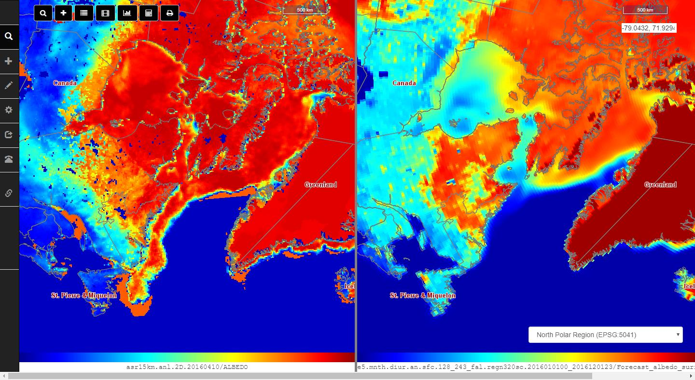
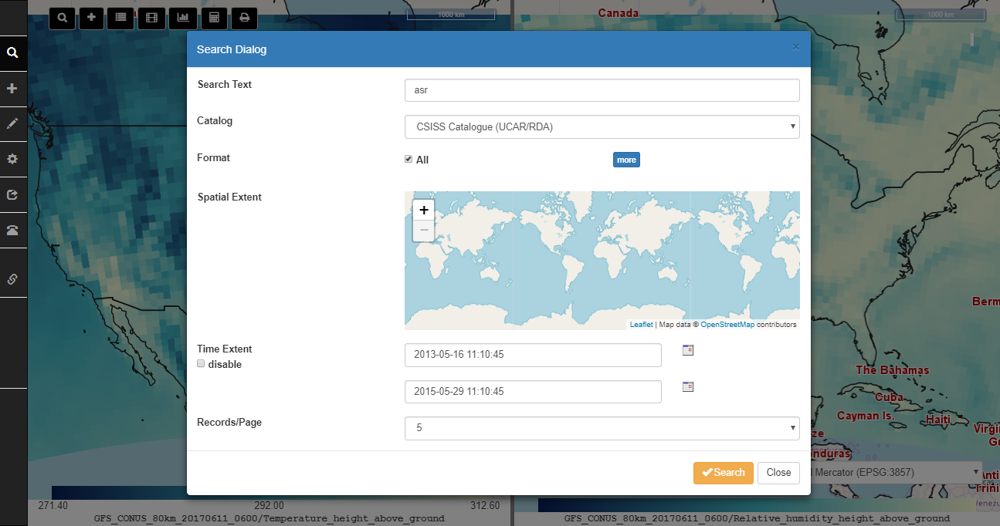
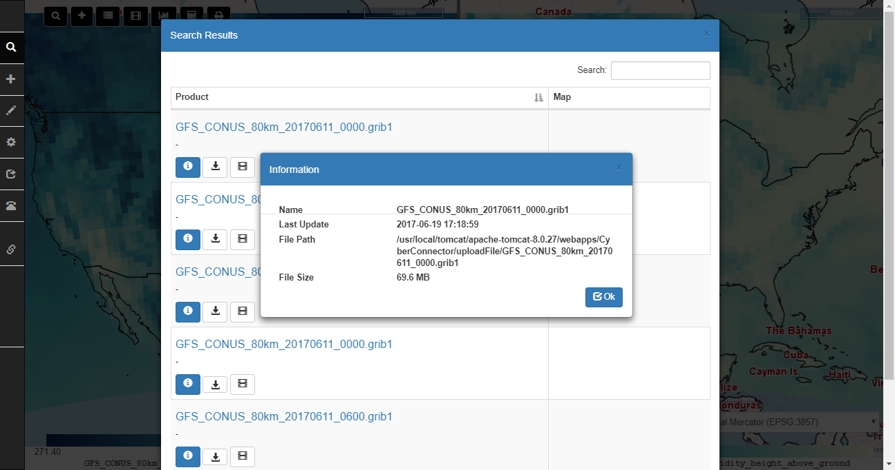
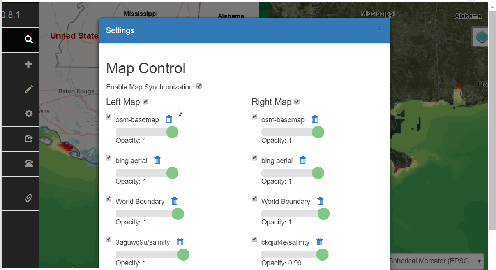
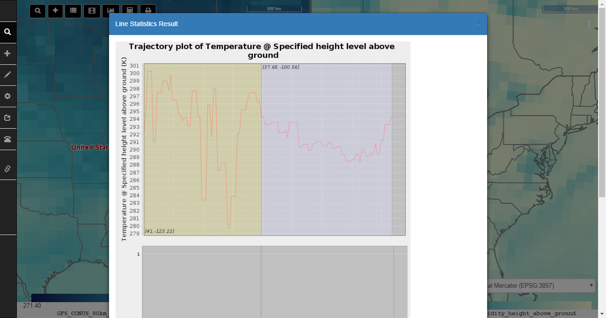
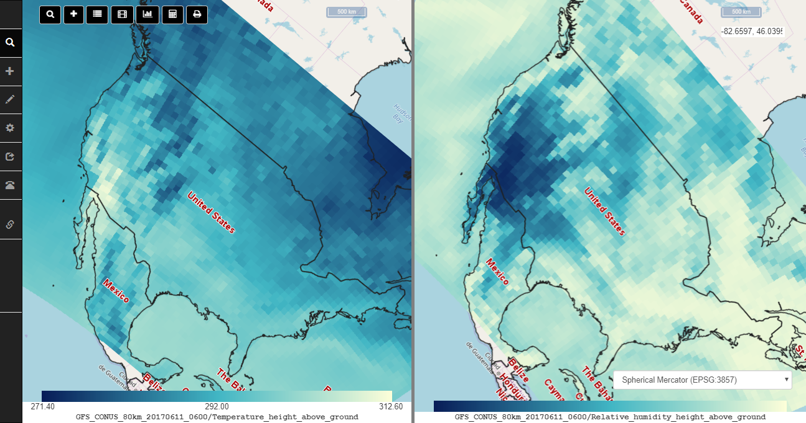

CyberConnector
NSF EarthCube Building Block project
This project aims to connect the existing data sources to the Earth science models so the generation of modeling products could be more automatic and effortless.
Installation
Prerequisite
Java 1.8+ (mandatory, OpenJDK)
Apache Tomcat 8.0+ (mandatory, web container)
MySQL 5.5+ (mandatory, database, initialize it with db/cc.empty.sql)
ncWMS 2.4.1+ (mandatory, download ncWMS.war and deploy it into Tomcat webapps folder)
cc-thredds-pycsw (optional, if you plan to set up your own catalog)
Apache Maven 3.5.0+ (optional, building CyberConnector.war from source)
Quick Start
Java War Package
To use CyberConnector, download the latest release war and copy it to the webapps directory of Tomcat. Start Tomcat.
After the tomcat is fully started, configure the database connection. The configuration files are WEB-INF/classes/config.properties (database url, default: jdbc:mysql://localhost:3306/cyberconnector) and WEB-INF/classes/cc_secret.properties (database username and password: database_user=root database_password=xxxxxxxx). Fill the fields with correct values. (Note: the database must be initiated first.)
Then enter the following URL into browser address bar to open CyberConnector:
http://your-ip:your-port/CyberConnector-<version>/web/CyberConnector
Replace the your-ip, your-port, CyberConnector-<version> with the real name of your tomcat and downloaded CyberConnector package. For example, localhost:8080, CyberConnector-0.6.6.
Cloud Instance Template
We provide a ready-to-use cloud template for you to install on mainstream cloud platforms like AWS, Google Cloud, Azure, OpenStack and CloudStack. Please go here to download the template.
Docker Image
We published a Docker image in DockerHub for docker users. The pull command is:
docker pull csiss/cyberconnector
Modules
COVALI - a sub-system for comparison and validation of atmospheric and other Earth science models (funded by EarthCube CyberWay)
CyberConnector Searcher - a sub-system for searching Earth observations, model results or virtual data products (VDP)
CyberConnector Orderer - a sub-system for orderring VDP (customizing existing observations into ready-to-use format)
CyberConnector Service Register - a sub-system for registering and searching geoprocessing web services
Usage
COVALI
Example:

Animation Demo:

Roam around the Globe

COVALI has different projection options and 3-D view to enable multi-perspective viewing the data.

Search Data
search in UCAR server

search in the public folder
Search results are listed in a panel where users can directly download the files or load them into the maps.

Add Data
COVALI supports visualizing GRIB/NetCDF data on the maps.

Settings
COVALI provides a Settings menu to controll the two maps. It allows users to manage the added data layers.

Tools
COVALI provides a number of tools to facilitate the comparison and validation among the data.
Statistic Report
Users can draw points or lines on the map to get a statistics on the values on the points or along the lines.

Map rotation
Use Alt+Shift+Drag to rotate the map.

Demo Site
A demo instance has been deployed on George Mason University server. here
License
MIT
Developers
Funders
National Science Foundation (#1740693 and #1440294)